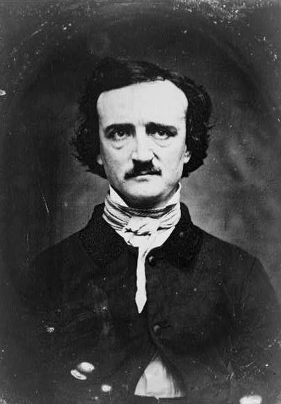

Edgar Allan Poe
Considered by many to be the father of the short story and the inventor
of detective fiction, Poe was a master of the macabre. He is best known
for his tales of terror, but he was also a poet. He became the topic of
much scrutiny in 1835, when he married his 13-year-old cousin, but he
is more often remembered for his publication a decade later.

--.- ..- --- - .... / - .... . / .-. .- ...- . -.